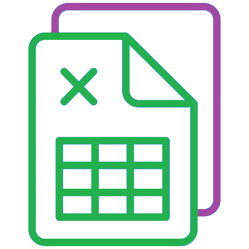
Hoja de calculo¶Celdas¶
Como hemos visto, una hoja de cálculo está compuesta de muchos rectángulos vacíos llamados celdas, las celdas se organizan en una cuadricula en columnas y filas.
- Todas las celdas que tienen la misma letra y se encuentran una encima de la otra, forman una "columna".
- Todas las celdas que tienen el mismo número y se encuentran una al lado de la otra, forman una "fila".
- Para identificar una celda se nombra su columna y a continuación su fila (Ejemplo: en el gráfico anterior está seleccionada la celda A1).
- Hay muchísimas celdas más de las que se ven en la pantalla inicial del área de trabajo.
- Para seleccionar una celda solo hay que pulsarla con el ratón, entonces se remarcará con una línea gruesa para indicárnoslo.
- También podemos seleccionar más de una celda a la vez arrastrando el ratón con el botón izquierdo pulsado. Al conjunto de celdas seleccionado se llama "rango", y se nombra por la celda superior izquierda y la celda inferior derecha separadas por dos puntos. (Por ejemplo: en la hoja de cálculo inferior se encuentra seleccionado el rango de celdas B3:D5).
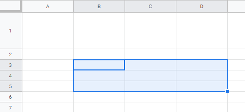
Actividad
📝 AA3.3 Selección de celdas¶
(C.ESP2 / CE2.3 / IC1-3p)
- Describe qué es una Celda, una Fila, una Columna y un Rango de celdas.
- ¿Cómo podemos seleccionar toda la columna D?, ¿Y cómo podemos seleccionar toda la fila 5?.
- Abre la hoja de cálculo y selecciona la celda B3, luego selecciona la fila 1 completa, luego selecciona la columna C completa y luego selecciona el rango de celdas C3: F5.
Seleccionar celdas
- Si queremos seleccionar una columna entera, basta con pulsar en la letra correspondiente a esa columna.
- Si queremos seleccionar una fila entera, basta con pulsar en el número correspondiente a esa fila.
- Las filas y columnas pueden ser redimensionadas al tamaño que queramos poniendo en cursos entre los dos números o letras correspondientes. Ejemplo: En la figura siguiente se ha aumentado la fila 1 situando el cursor entre el [ 1 ] y el [ 2 ] y desplazando la línea con el ratón
- Si queremos seleccionar todo debemos hacer clic en el pequeño cuadro que se encuentra entre las cabeceras de columna y las cabeceras de fila o Editar > Seleccionar todo.
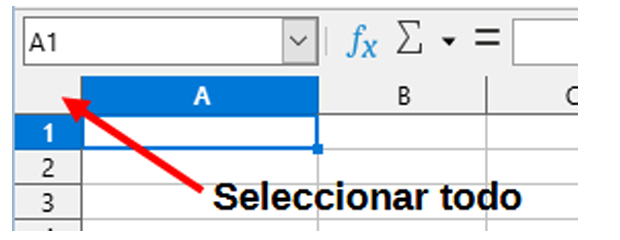
Introducción de datos¶
En cada una de las celdas de una hoja de cálculo pueden introducirse distintos tipos de datos llamados formatos:
-
Números
Se usan para valores cuantitativos.
Ejemplo:1234o3,14. -
Porcentajes
Muestran proporciones en %.
Ejemplo:45%. -
Monedas
Representan valores económicos.
Ejemplo:€25,99o$10.50. -
Fecha
Indican un día, mes y año.
Ejemplo:06/10/2025. -
Tiempo
Muestran horas, minutos y segundos.
Ejemplo:14:35:07. -
Científico
Expresan números grandes o pequeños en notación científica.
Ejemplo:3.2E+08. -
Fracción
Representan divisiones o partes de un todo.
Ejemplo:1/2o3/4. -
Texto
Se usa para cadenas de caracteres.
Ejemplo:"Hola mundo". -
Fórmulas
Permiten realizar cálculos automáticos.
Ejemplo:=SUMA(A1:A5).
Para introducir un dato en una celda, primero hay que seleccionarla y posteriormente empezar a escribir el dato dentro de la misma.
Si queremos cambiar un dato introducido en una celda hay que seleccionarla y cambiar su valor en la barra de fórmulas o bien pulsar dos veces con el ratón en una celda, con lo que podremos cambiarla en la misma celda (También se consigue este último efecto seleccionando una celda y pulsando la tecla [F2]).
Una vez que hemos introducido un dato en una celda, hay que pulsar la tecla [Enter] o pulsar con el ratón sobre otra celda distinta.
Operaciones básicas sobre celdas¶
-
Copiar
Menú: Editar → Copiar
Atajo: Ctrl + C
-
Cortar
Menú: Editar → Cortar
Atajo: Ctrl + X
-
Pegar
Menú: Editar → Pegar
Atajo: Ctrl + V
-
Eliminar
Menú: Editar → Eliminar valores
Atajo: Supr
Formato de celda¶
Ya hemos visto anteriormente los formatos que pueden aplicarse a los datos introducidos en una celda.
Al introducir un dato en una celda, la aplicación va a intentar en primer lugar, interpretarlo como un número o como un texto, y por defecto alineará los números a la derecha y el texto a la izquierda.
Intentará, así mismo, aplicarle un formato. Por ejemplo, si escribimos en una celda 24-6-01 y pulsamos la tecla Enter para fijar ese valor, Calc automáticamente interpreta ese dato como una fecha y lo transforma a 24/06/01.
Si el número es muy grande y no es posible mostrarlo completamente en la celda, Calc aplicará el formato científico, cuya apariencia es 5,73478E+9. La interpretación de esta expresión es fácil, el E+9 equivale a 10 elevado a 9, o lo que es igual, a multiplicar por un 1 seguido de 9 ceros.
Lo normal será esperar a introducir todos los datos para posteriormente pasar a aplicar los formatos. Para esto, en primer lugar seleccionamos la celda o celdas en cuestión y elegimos Formato -> Número. Con esto, obtendremos un desplegable donde podemos elegir el formato de número de la celda elegida.
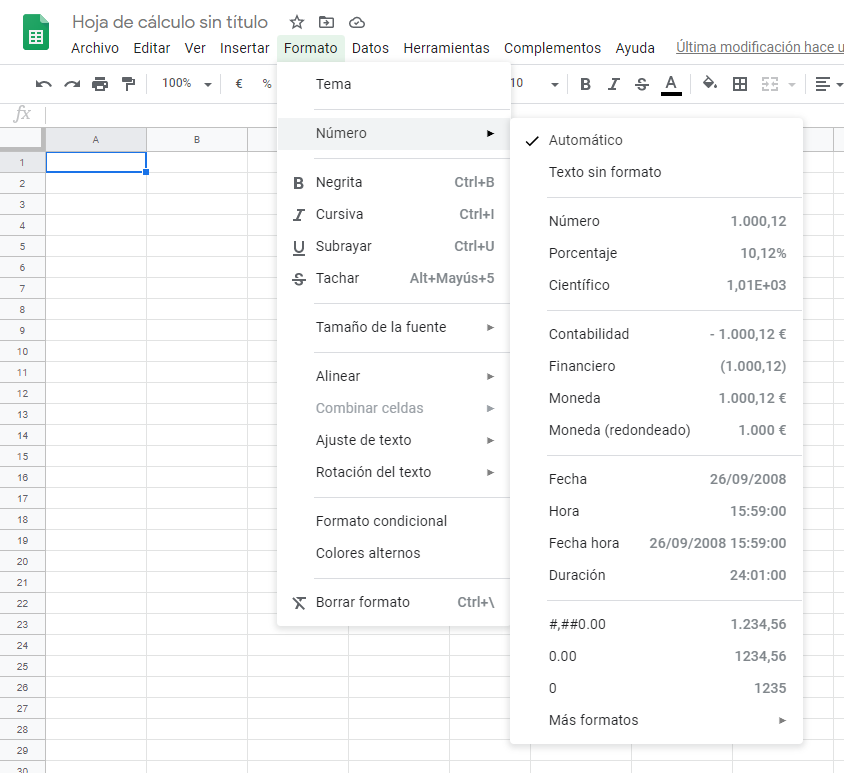
Desde el menú Formato podemos aplicar efectos al contenido de la celda, como el tipo y tamaño de letra, la alineación de texto, su color, etc. Casi todas estas opciones las tenemos también en la barra de herramientas.
- Con la opción Formato -> Combinar celdas, podemos unir un rango de celdas en una sola.
- En el menú formato está la opción Formato -> Tema, que nos permite decorar una hoja de cálculo entera eligiendo entre varios diseños.
- La opción Formato -> Colores alternos nos colorea las filas pares de un color y las impares de otro, para que sea más fácil localizar datos en filas muy largas.
- Para indicar los decimales, hay que utilizar la coma, no vale el punto del teclado numérico.
- Con el icono Ajuste de texto de la barra de herramientas podemos hacer que el texto se distribuya en varias lineas para que quepa en su celda.
Bordes¶
En la barra de herramientas tenemos el botón de bordes, con el que podemos añadir bordes a cada celda, indicando su color, forma y grosor.
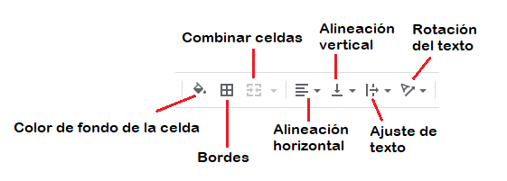
Actividad
📝 AA3.4 Selección de celdas¶
(C.ESP2 / CE2.3 / IC1-3p)
- Abre la hoja de cálculo.
- Haz la siguiente tabla lo más parecida posible modificando las celdas con el menú Formato y los iconos de la barra de herramientas.
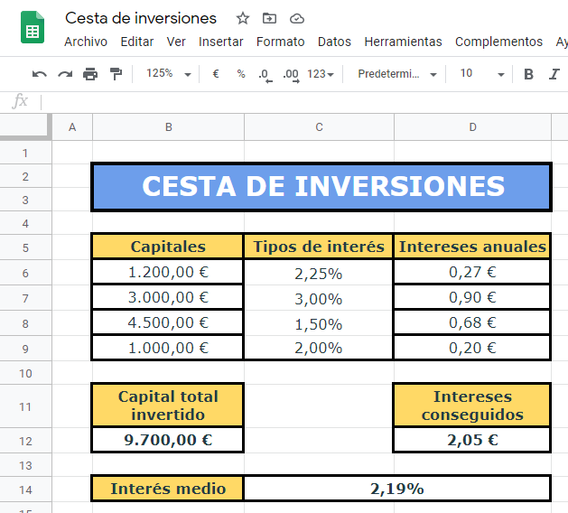
Fórmulas¶
La característica más importante de las hojas de cálculo es la de realizar operaciones con los datos incluidos en las celdas. Esas operaciones pueden agruparse para formar fórmulas más complejas.
Para introducir fórmulas en una celda de una hoja de cálculo se debe utilizar el símbolo = seguido de las operaciones entre las celdas (En la celda aparecerá el valor resultante de aplicar la fórmula a los valores de las celdas seleccionadas).
Empecemos por un ejemplo sencillo, si escribimos el número 23 en la celda C2, el número 52 en la celda C3 y luego hacemos clic en la celda C4 y escribimos =C2+C3 y pulsamos Intro. Entonces en la celda C4 aparecerá el valor correspondiente a la suma de los valores contenidos en las celdas C2 y C3.
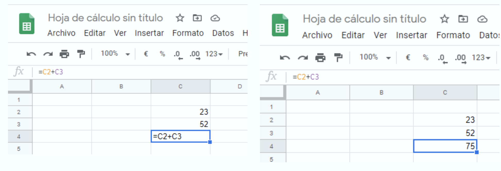
Otra manera de hacerlo (a menudo más fácil y directa) es seleccionar la celda C4 y escribir = en ella, luego hacemos clic sobre la celda C2 (aparecerá marcada con un recuadro amarillo), pulsamos + y después hacemos clic en la celda C3.
Podemos utilizar las operaciones suma +,resta -, multiplicación * ,división /, potencia ^ y los paréntesis ( ) para agrupar operaciones.
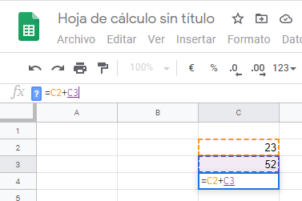
Si cambiásemos alguno de los valores de C2 o de C3, cambiaría automáticamente el resultado de C4 ya que lo que estamos sumando no es 23 y 52, sino lo que hay en la celda C2 y lo que hay en la celda C3.
Funciones¶
Ya hemos visto cómo realizar en una celda cálculos básicos con los valores de otras celdas. Sin embargo, Calc dispone de más de 700 funciones de todo tipo (Finanzas, matemáticas, fechas, lógicas, de texto, etc).
Para acceder a las funciones que incorpora Calc debemos elegir Insertar -> Función del menú, con esto nos aparece una ventana como la siguiente, donde podemos elegir la función de una extensa lista:
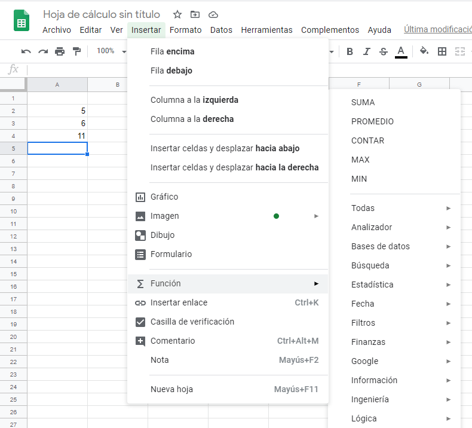
Algunas de las funciones más usadas son:
\=SUMA(N1;N2;N3...)Nos suma los números de varias celdas\=PROMEDIO(N1;N2;N3...)Nos calcula la media aritmética de los números de varias celdas\=CONTAR(N1;N2;N3...)Nos devuelve el número de valores de celdas que forman un rango\=MÁX(N1;N2;N3...)Nos da el valor máximo entre varios números\=MÍN(N1;N2;N3...)Nos da el valor mínimo entre varios números- Las funciones también se pueden anidar para construir funciones más complejas: Ejemplo:
\=SUMA(PROMEDIO(A1:A10);(A1:A11). Podemos desplazarnos de una celda a la siguiente mediante la teclas [TAB] o las flechas de dirección.
Actividad
📝 AA3.5 Funciones¶
(C.ESP2 / CE2.3 / IC1-3p)
- Abre la hoja de cálculo de Calc.
- Realiza las siguientes hojas de cálculo en dos hojas diferentes, una llamada "Calculadora" y otra llamada "Factura". Recuerda que para crear una hoja nueva hay que pulsar el botón [+].
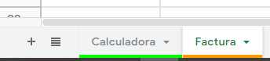
- Aplica a cada celda el tipo de número, los colores y los bordes correspondientes.
- EN LAS CELDAS EN BLANCO HAY QUE INTRODUCIR OPERACIONES MATEMÁTICAS BÁSICAS.
- Haz la siguiente tabla lo más parecida posible modificando las celdas con el menú Formato y los iconos de la barra de herramientas.
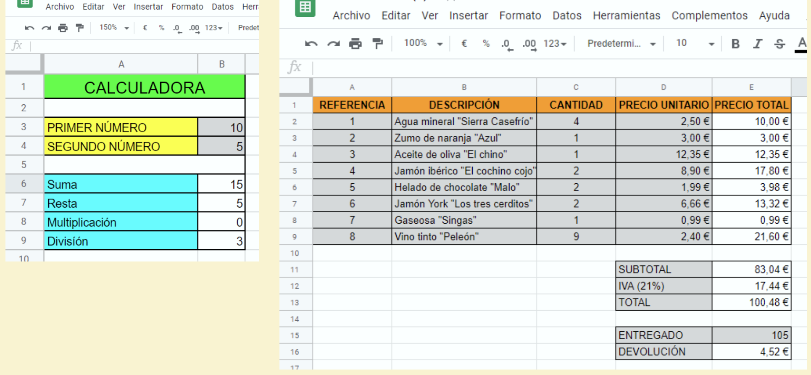
Autollenado de celdas¶
Si aproximas el cursor del ratón a la esquina inferior derecha de una casilla, sobre un cuadradito azul, éste se transforma en una cruz. Si arrastramos la casilla, las siguientes casillas se rellenan automáticamente siguiendo la serie correspondiente, como vemos en el ejemplo anterior:
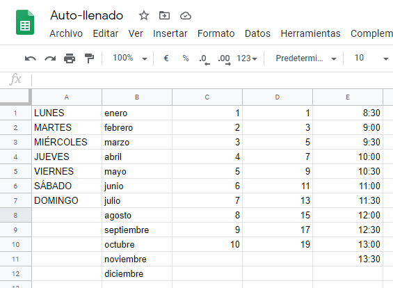
Actividad
📝 AA3.6 Autollenado de celdas¶
(C.ESP2 / CE2.3 / IC1-3p)
- Abre la hoja de cálculo de Calc.
- Realiza las siguientes hoja de notas de un profesor (Incluyendo bordes y colores).
-
EN LAS CELDAS EN BLANCO HAY QUE INTRODUCIR OPERACIONES MATEMÁTICAS BÁSICAS O FUNCIONES.
-
Calculamos la nota media mediante de cada trimestre con la función PROMEDIO.
- Calculamos NOTA FINAL mediante el PROMEDIO de las tres notas medias correspondientes a los tres trimestres.
- Para calcular la nota máxima y mínima, hemos de utilizar las funciones MAX y MIN respectivamente.
- UTILIZA EL AUTOLLENADO PARA NO TENER QUE REPETIR LAS FÓRMULAS.
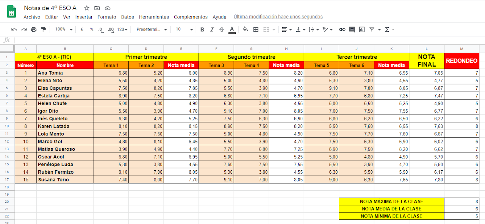
-
Escribe en otra pestaña de la misma hoja las siguientes funciones, que sirven para pasar números decimales a números romanos y para calcular la letra del NIF. Con estas funciones podemos observar la potencia y diversidad de las funciones de la hoja de cálculo. Al final, envía la hoja de cálculo por correo electrónico a tu profesor
-
Para que puedas copiar y pegar la fórmula anidada:
=CONCATENAR(B4;MID("trwagmyfpdxbnjzsqvhlcke";RESIDUO(B4;23)+1;1))
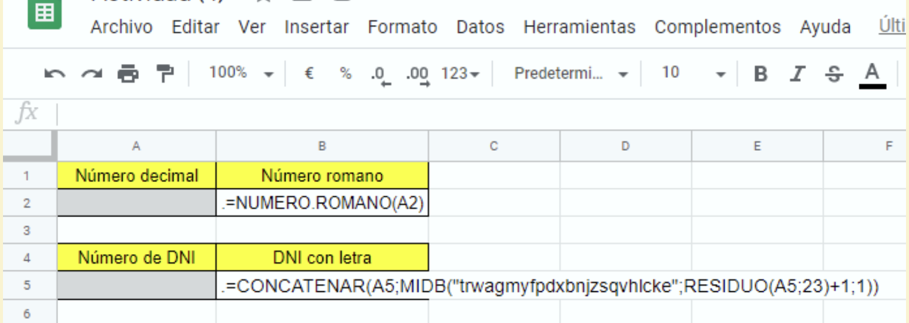